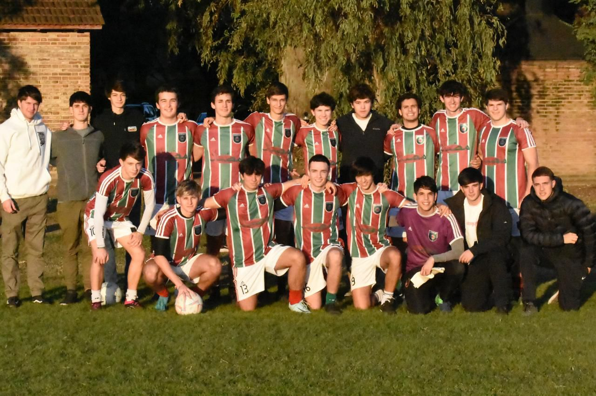

¡Bienvenidos a la página oficial de la GARRAFA!
Historia del Equipo
Fundado en 2019 por un grupo de amigos apasionados por el fútbol, La GARRAFA ha crecido rápidamente en la escena local.
Aunque es un equipo joven, ha logrado destacarse en ligas regionales gracias a su dedicación y espíritu de equipo.
Con un enfoque en el desarrollo de jóvenes talentos, el club sigue avanzando con el sueño de llegar a la primera división.
Jugadores Destacados
- Francisco Gallar - Delantero (33 goles en la temporada)
- Lucas Martino - Defensor (12 goles de cabeza en la temporada)
- Benjamin Cullen - Portero (Valla invicta durante 21 partidos)